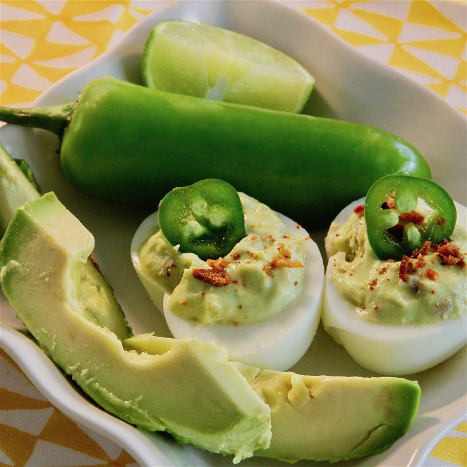

Deviled Eggs Recipe
Avocado Deviled Eggs

Do not adjust your monitors, these are green!
A "Californian" twist on a traditional recipe
Sacrelige!? No, scrupmtiousness. Green is the new yellow. Kick it up a notch at the potluck by swapping out some of the bad fat for the good fat.
Ingredients
- 6 hard-boiled eggs, peeled and halved
- 1 avocado - peeled, pitted, and diced
- 3 slices cooked turkey bacon, chopped, divided
- 2 1/2 tablespoons mayonnaise
- 2 teaspoons lime juice
- 1 clove garlic, crushed
- 1/8 teaspoon cayenne pepper
- sea salt to taste
- 1 jalapeno pepper, sliced (optional)
- 1 dash hot sauce, or to taste (optional)
Steps
- Scoop egg yokes into a bowl; add avocado, 2/3 of chopped turkey bacon, mayonnaise, lime juice, garlic, cayenne pepper, and salt
- Mash egg yolk mixture until filling is evenly combined
- Spoon filling into a piping bag or plastic bag with a snipped corner
- Pipe filling into each egg white; top with a turkey bacon piece, jalapeno slice, and dash hot sauce